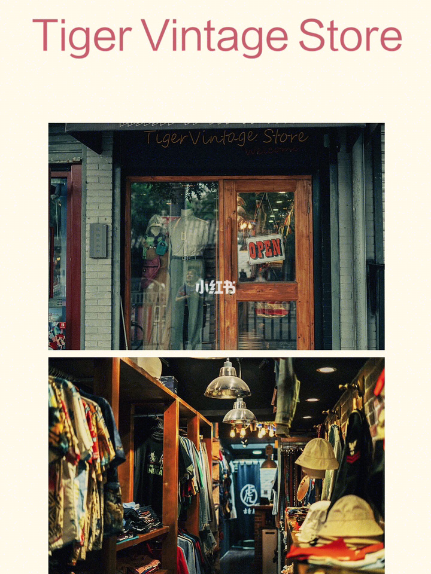
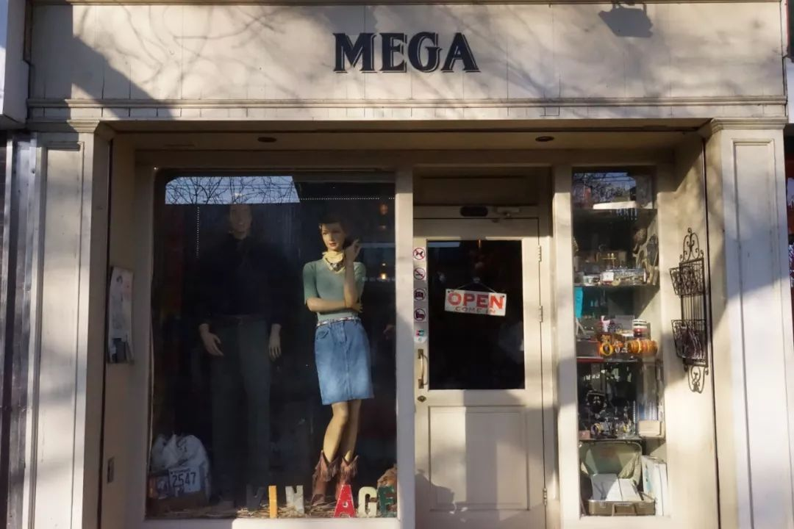
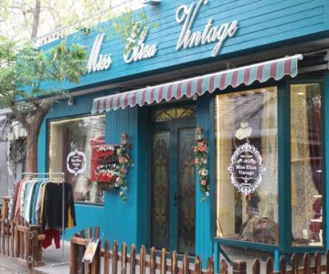

Vintage market in Beijing
|  |
Tiger Vintage
Location: 62 Gulou Dongdajie Dongcheng District Description: One of the better vintage shops around town, with a superior selection of leather jackets, retro midi dresses and faded tees. |
|  |
Mega Vintage
Location: 241 Gulou E St, Dongcheng, Beijing, China Description: Widely regarded as one of the best vintage stores in the city, with a well-varied selection of plaid shirts, retro dresses, distressed denim and leather bags and shoes that just can't be beat. |
|  |
Miss Eliza Vintage
Location: 9 Nanxiawazi Hutong Dongcheng District Description: Eliza's Vintage has a treasure trove of fashions that traverse the decades and a number of quality foreign-sourced garments and accessories. You won’t encounter obscure old knock-offs or cleaned up rags from a Tianjin warehouse, but you will find classic designs from Versace and Valentina, vintage wool skirts, silk blouses, purses, gold pendants, costume jewelry, and handcrafted fascinators. |